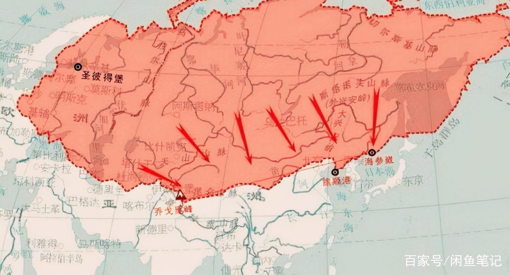

列宁
1900年12月
俄国正在结束对中国的战争。动员了好些军区，耗费了数亿卢布，派遣了几万名士兵到中国去，打了许多次仗，取得了一连串的胜利，——的确，这些胜利与其说是战胜了敌人的正规军，不如说是战胜了中国的起义者，更不如说是战胜了手无寸铁的中国人。淹死和屠杀他们，不惜残杀妇孺，更不用说抢劫皇宫、住宅和商店了。而俄国政府以及奉承它的报纸，却庆祝胜利，欢呼勇敢的军队的新战功，欢呼欧洲文化击败中国野蛮，欢呼俄罗斯“文明传播者使命”在远东的新成功。

在这一片欢呼声中，只是听不到千百万劳动人民的先进代表——觉悟工人的声音。但是，这次新的胜利征战的重担，完全是由劳动人民承担的，从他们中间抽了许多人到远方去。为了弥补庞大的开支，向他们征收了重税。那么，社会主义者对于这次战争应该采取什么态度呢？这次战争对谁有利呢？俄国政府的政策的真正意义是什么呢？我们现在试来分析一下这个问题。
我国政府首先想使人相信，它甚至不是在同中国打仗，它只是在平定暴乱，镇压叛乱者，帮助合法的中国政府恢复正常秩序。虽然是不宣而战，但是问题的本质并没有因此而有丝毫改变，因为战争毕竟是在进行。试问，中国人对欧洲人的进攻，这次遭到英国人、法国人、德国人、俄国人和日本人等等疯狂镇压的暴动，究竟是由什么引起的呢？主战派硬说，这是由于“黄种人敌视白种人”，“中国人仇视欧洲文化和文明引起的。”是的，中国人的确憎恶欧洲人，然而他们究竟憎恶哪一种欧洲人呢？并且为什么憎恶呢？中国人并不是憎恶欧洲人民，因为他们之间并无冲突，他们是憎恶欧洲资本家和唯资本家之命是从的欧洲各国政府。那些到中国来只是为了大发横财的人，那些利用自己的所谓文明来进行欺骗，掠夺和镇压的人，那些为了取得贩卖毒害人民的鸦片的权利而同中国作战（1856年英法对华的战争）的人，那些用传教的鬼话来掩盖掠夺政策的人，中国人难道能不痛恨他们吗？欧洲各国资产阶级政府早就对中国实行这种掠夺政策了，现在俄国专制政府也参加了进去。我们通常把这种掠夺政策叫做殖民政策。凡是资本主义工业发展很快的国家，都要急于找寻殖民地，也就是找寻一些工业很不发达、还多少保留着宗法制度特点的国家，它们可以向这里倾销工业品，从中牟利。为了让一小撮资本家大发横财，各资产阶级政府进行了连年不断的战争，把士兵整团整团的开到有损健康的热带国家去送命，耗费了从人民身上搜刮来的大量钱财，使居民的起义风起云涌，使他们濒于饿死的边缘。我们不妨回忆一下印度土著的抗英起义和印度的饥荒，以及现在英国人的对布尔人的战争。
欧洲资本家的贪婪的魔掌现在已经伸向中国了。俄国政府恐怕是最先伸出魔掌的，但是它现在却扬言自己“毫无私心”。它“毫无私心地”占领了中国的旅顺口，并且在俄国军队保护下开始在满洲修筑铁路。欧洲各国政府一个接一个拼命掠夺（所谓“租借”）中国领土，瓜分中国的议论并不是无的放矢。如果直言不讳，就应当说：“欧洲各国政府（最先恐怕是俄国政府）已经开始瓜分中国了。不过他们在开始是不是公开瓜分的，而是像贼那样偷偷摸摸进行的。它们盗窃中国，就像盗窃死人的财物一样，一旦这个假死人试图反抗，它们就像野兽一样猛扑到他身上。他们杀人放火，把村庄烧光，把老百姓驱入黑龙江中活活淹死，枪杀和刺死手无寸铁的居民和他们的妻子儿女。就在这些基督教徒立功的时候，他们却大叫大嚷反对野蛮的中国人，说他们胆敢触犯文明的欧洲人。俄国专制政府在1900年8月12日给各国的照会中宣称：俄国军队占领牛庄并且开入满洲境内，乃是临时的措施；采取这些措施，“完全是由于必须击退中国叛乱者的侵略行动”；“绝对不能说明帝国政府有任何违反政策的自私计划”。
好一个可怜的帝国政府！它简直像基督教徒那样毫无私心，人们竟冤枉了它，简直太不公平了！几年以前，它毫无私心地侵占了旅顺口，现在又毫无私心地侵占满洲，毫无私心地把大批包工头、工程师和军官集结在与俄国接壤的中国地区，不得不引起以温顺出名的中国人的愤怒。在修筑中东铁路时，每天只付给中国人十戈比的生活费，这难道还不是俄国毫无私心地表现吗？
但是，我国政府为什么要对中国实行这种狂妄的政策呢？这种政策对谁有利呢？它对一小撮同中国生意的资本家大亨有利，对一小撮为亚洲市场生产商品的厂主有利，对一小撮现在靠紧急军事订货大发横财的包工头有利（有些生产武器、军需品等等的工厂正在拼命地干，并且增雇成千的日工）。这种政策对一小撮身居军政要职的贵族有利。他们所以需要实行冒险政策，是因为通过这种政策可以升官发财，建立“功勋”扬名于世。我国政府为了这一小撮资本家和狡猾的官吏的利益，竟断然牺牲了全国人民的利益。沙皇专制政府这一次也和往常一样，暴露出自己是甘愿充当资本家大亨和贵族的奴才的昏官的政府。
侵略中国对俄国工人阶级和全体劳动人民有什么好处呢？成千上万个家庭因劳动力被拉去打仗而破产，国债和国家开支的激增，捐税加重，剥削工人的资本家的权力扩张，工人的状况恶化，农民的死亡有增无减，西伯利亚大闹饥荒——这就是对中国战争能够带来而且已经带来的灾难。俄国的一切出版物、一切报刊，都处于奴隶地位，不得到政府官吏的许可，它们就不敢登载任何东西，因此在对中国的战争中人民付出了多少代价，我们没有确切的材料，但是这次战争的费用达好几亿卢布，这是没有疑问的。有消息说，政府遵照一项没有公布的命令，一次就拨出军费一亿五千万卢布，而目前的战费开支每三四天就要耗掉一百万卢布。政府大把大把地花钱，但是给饥饿的农民的救济金却一扣再扣，斤斤计较每一个戈比，不愿意把钱用在国民教育上，他和一切富农一样，从官办工厂的工人和邮政机关小职员等等的身上榨取血汗。
财政大臣维特曾经宣称，截至1900年1月1日，国库尚存闲置现款两亿五千万卢布，但是现在这笔钱已经没有了，都投入了战争，政府正在发行公债，增加捐税，因财政拮据而缩减必要的开支，停止修筑铁路。沙皇政府虽然面临破产的危险，仍然拼命实行侵略政策，这不但需要大量资金，而且有卷入更可怕的战争的危险。进攻中国的欧洲列强，已经在分赃问题上争吵起来了，谁也不能断定这次争吵会怎样收场。
沙皇政府对中国实行的政策不仅侵犯人民的利益，而且还竭力毒害人民群众的政治意识。凡是只靠刺刀才能维持的政府，凡是不得不经常压制或遏止人民愤怒的政府，都早就懂得一个真理：人民的不满是无法消除的，必须设法把这种对政府的不满转移到别人身上去。例如煽起对犹太人的仇恨，卑鄙的报纸中伤犹太人，说犹太人不像俄国工人那样受资本和警察政府的压迫。目前在报刊上大肆攻击中国人，叫嚣黄种人的野蛮，仇视文明，俄国负有开导的使命，还说什么俄国士兵去打仗是如何兴高采烈，如此等等。向政府和大财主摇尾乞怜的记者们，拼命在人民中间煽风点火，挑起对中国的仇恨。但是中国人民从来也没有压迫过俄国人民，中国人民也遭到俄国人民所遭到的那种苦难，他们遭受到向饥饿农民横征暴敛和用武力压制自由愿望的亚洲市政府的压迫，遭受到侵入中国的资本压迫。
俄国工人已经开始从人民所处的那种政治上受压迫和愚昧无知的状态中挣脱出来。因此，一切觉悟的工人就有责任全力起来反对那些挑拨民族仇恨和使劳动人民的注意力离开其真正敌人的人们。沙皇政府在中国的政策是一种犯罪的政策，它更使人民破产，使人民受到更深的毒害和更大的压迫。沙皇政府不仅使我国人民变成奴隶，而且还派他们去镇压那些不愿意做奴隶的别国人民（如1849年，俄国军队曾镇压匈牙利革命）。它不仅帮助俄国资本家剥削本国工人，把工人的双手捆起来，使他们不能团结自卫，而且还为了一小撮富人和显贵的利益出兵掠夺别国人民。要想打碎战争强加在劳动人民身上的新的枷锁，唯一的办法就是召开人民代表会议，以结束政府的专制统治，迫使政府不光是照顾宫廷奸党的利益。
载于1900年12月《火星报》创刊号
按《火星报》原文印刊
选自《列宁全集》第四卷第334—338页